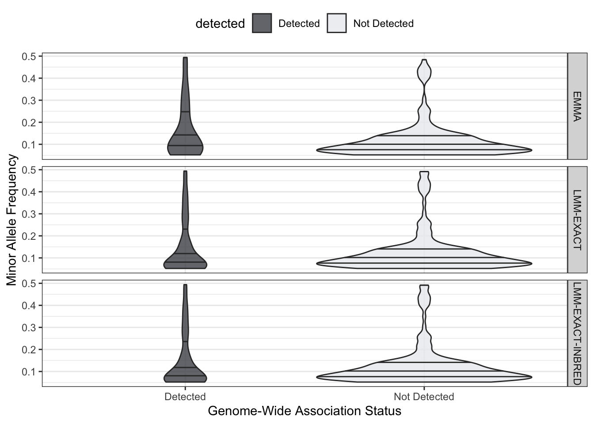
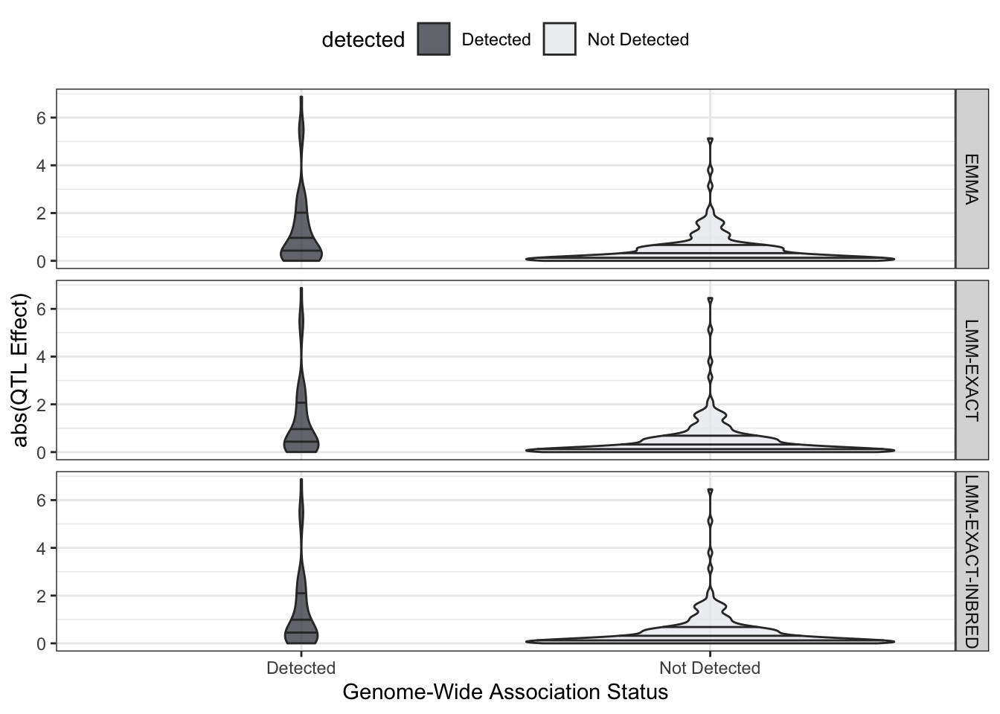

How Good Are Confidence Intervals?
Determining Default CI Width Selection From Simulations
Last updated: 2020-10-01
Checks: 6 1
Knit directory: NemaScan_Performance/
This reproducible R Markdown analysis was created with workflowr (version 1.6.2). The Checks tab describes the reproducibility checks that were applied when the results were created. The Past versions tab lists the development history.
Great! Since the R Markdown file has been committed to the Git repository, you know the exact version of the code that produced these results.
Great job! The global environment was empty. Objects defined in the global environment can affect the analysis in your R Markdown file in unknown ways. For reproduciblity it’s best to always run the code in an empty environment.
The command set.seed(20200825) was run prior to running the code in the R Markdown file. Setting a seed ensures that any results that rely on randomness, e.g. subsampling or permutations, are reproducible.
Great job! Recording the operating system, R version, and package versions is critical for reproducibility.
Nice! There were no cached chunks for this analysis, so you can be confident that you successfully produced the results during this run.
Using absolute paths to the files within your workflowr project makes it difficult for you and others to run your code on a different machine. Change the absolute path(s) below to the suggested relative path(s) to make your code more reproducible.
| absolute | relative |
|---|---|
| ~/Documents/projects/NemaScan_Performance/ | . |
Great! You are using Git for version control. Tracking code development and connecting the code version to the results is critical for reproducibility.
The results in this page were generated with repository version 82e6818. See the Past versions tab to see a history of the changes made to the R Markdown and HTML files.
Note that you need to be careful to ensure that all relevant files for the analysis have been committed to Git prior to generating the results (you can use wflow_publish or wflow_git_commit). workflowr only checks the R Markdown file, but you know if there are other scripts or data files that it depends on. Below is the status of the Git repository when the results were generated:
Ignored files:
Ignored: .DS_Store
Ignored: .Rhistory
Ignored: analysis/.DS_Store
Ignored: code/.DS_Store
Ignored: data/.DS_Store
Ignored: output/.DS_Store
Untracked files:
Untracked: code/generate_strain_lists_swept.R
Untracked: code/startup.R
Untracked: code/susie.R
Untracked: data/CelegansStrainData.tsv
Untracked: data/Common_divergent_regions_clustered.tsv
Untracked: data/Intermediate_divergent_regions_clustered.tsv
Untracked: data/NemaScan_Performance.CeNDR2020_PowerPrecision.RData
Untracked: data/NemaScan_Performance.CeNDR2020_PowerPrecision_GAMMA.20200909.RData
Untracked: data/NemaScan_Performance.CeNDR2020_PowerPrecision_GAMMA.RData
Untracked: data/NemaScan_Performance.CeNDR2020_PowerPrecision_GAMMA_EMMA.20200924.RData
Untracked: data/NemaScan_Performance.CeNDR2020_PowerPrecision_REDO.20200909.RData
Untracked: data/NemaScan_Performance.CeNDR2020_cendr_sets.20200929.RData
Untracked: data/NemaScan_Performance.CeNDR2020_population_subsampling.20200925.RData
Untracked: data/Rare_divergent_regions_clustered.tsv
Untracked: data/all_susie_BF_hits.tsv
Untracked: data/all_susie_hits.tsv
Untracked: data/sweep_summary.tsv
Untracked: output/susie.validation.csv
Untracked: output/swept.by.chr.strain.lists.txt
Unstaged changes:
Modified: analysis/population.comparison.Rmd
Modified: analysis/variant.set.comp.Rmd
Note that any generated files, e.g. HTML, png, CSS, etc., are not included in this status report because it is ok for generated content to have uncommitted changes.
These are the previous versions of the repository in which changes were made to the R Markdown (analysis/FPR_CI.Rmd) and HTML (docs/FPR_CI.html) files. If you’ve configured a remote Git repository (see ?wflow_git_remote), click on the hyperlinks in the table below to view the files as they were in that past version.
| File | Version | Author | Date | Message |
|---|---|---|---|---|
| Rmd | 82e6818 | Sam Widmayer | 2020-10-01 | update with hard-filtered variants, remove divergent region analysis |
| html | 2489cd5 | Sam Widmayer | 2020-09-25 | Build site. |
| Rmd | 9423152 | Sam Widmayer | 2020-09-25 | update FP analysis with EMMA mappings |
| html | 3adc26c | Sam Widmayer | 2020-09-14 | Build site. |
| Rmd | 9d38bd2 | Sam Widmayer | 2020-09-14 | echo=F for one block |
| html | df3d324 | Sam Widmayer | 2020-09-14 | Build site. |
| Rmd | b647441 | Sam Widmayer | 2020-09-14 | divergent FP stat update |
| html | c203537 | Sam Widmayer | 2020-09-14 | Build site. |
| Rmd | f52ec8c | Sam Widmayer | 2020-09-14 | organize with TOC |
| html | b133949 | Sam Widmayer | 2020-09-14 | Build site. |
| Rmd | 68daf48 | Sam Widmayer | 2020-09-14 | organize with TOC |
| html | 4babef1 | Sam Widmayer | 2020-09-14 | Build site. |
| Rmd | 8bf0c7a | Sam Widmayer | 2020-09-14 | organize with TOC |
| html | 02caab1 | Sam Widmayer | 2020-09-11 | Build site. |
| Rmd | ab3c268 | Sam Widmayer | 2020-09-11 | organize stats |
| html | 28b3096 | Sam Widmayer | 2020-09-11 | Build site. |
| Rmd | 82bbc15 | Sam Widmayer | 2020-09-11 | organize stats |
| Rmd | fe322a9 | Sam Widmayer | 2020-09-11 | organize stats |
| html | 05614d1 | Sam Widmayer | 2020-09-11 | Build site. |
| Rmd | 236801e | Sam Widmayer | 2020-09-11 | divergent region integration |
| html | a1188e3 | Sam Widmayer | 2020-09-09 | Build site. |
| html | 58ed2f4 | Sam Widmayer | 2020-09-09 | Build site. |
| Rmd | d3dd2ec | Sam Widmayer | 2020-09-09 | wflow_publish(files = “analysis/FPR_CI.Rmd”) |
| Rmd | ee75180 | Sam Widmayer | 2020-09-09 | bin FPs |
| html | 1b6b11a | Sam Widmayer | 2020-09-09 | Build site. |
| Rmd | 3e75ce8 | Sam Widmayer | 2020-09-09 | wflow_publish(files = c(“analysis/gamma.effects.Rmd”, “analysis/FPR_CI.Rmd”)) |
| Rmd | d3d0082 | Sam Widmayer | 2020-09-09 | fix bug; simulated QTL were missed as false negatives |
| html | ae3fc60 | Sam Widmayer | 2020-09-08 | Build site. |
| Rmd | ba70c6f | Sam Widmayer | 2020-09-08 | paged table, custom figure size |
| Rmd | 28f75f5 | Sam Widmayer | 2020-09-08 | paged table, custom figure size |
| html | 8cd4c7f | Sam Widmayer | 2020-09-08 | Build site. |
| Rmd | fd7d15a | Sam Widmayer | 2020-09-08 | manhattan plotting of FPs |
| html | eb77d6f | Sam Widmayer | 2020-09-08 | Build site. |
| Rmd | 9f9ac48 | Sam Widmayer | 2020-09-08 | wflow_publish(files = “analysis/FPR_CI.Rmd”) |
| Rmd | c0b2ed2 | Sam Widmayer | 2020-09-08 | manhattan plotting of FPs |
| html | 4e1e444 | Sam Widmayer | 2020-09-08 | Build site. |
| Rmd | 4609673 | Sam Widmayer | 2020-09-08 | wflow_publish(files = “analysis/FPR_CI.Rmd”) |
| Rmd | 18830b3 | Sam Widmayer | 2020-09-08 | initiate |
Analysis date: October 01, 2020
Simulation Parameters
NemaScan simulation performance was assessed with the following experimental parameters:
Number of Simulated QTL:
5Sample Population(s):
completeHeritability(ies):
0.1, 0.2, 0.3, 0.4, 0.5, 0.6, 0.7, 0.8, 0.9MAF(s):
0.05Number of Replicates per Regime:
50QTL Effect Range:
gamma
Simulated QTL Locations


| Version | Author | Date |
|---|---|---|
| 2489cd5 | Sam Widmayer | 2020-09-25 |
`summarise()` regrouping output by 'h2' (override with `.groups` argument)Joining, by = c("h2", "algorithm", ".metric", ".estimator", ".estimate")Joining, by = c("h2", "algorithm")Statistical Testing - Minor Allele Frequencies
Differences among groups were calculated using Kruskal-Wallis Rank Sum Tests within each algorithm.
$EMMA
# A tibble: 9 x 3
h2 Detected `Not Detected`
<fct> <dbl> <dbl>
1 0.1 0.141 0.122
2 0.2 0.162 0.109
3 0.3 0.155 0.118
4 0.4 0.142 0.125
5 0.5 0.147 0.121
6 0.6 0.132 0.119
7 0.7 0.135 0.124
8 0.8 0.135 0.132
9 0.9 0.129 0.129
$`LMM-EXACT`
# A tibble: 9 x 3
h2 Detected `Not Detected`
<fct> <dbl> <dbl>
1 0.1 0.145 0.125
2 0.2 0.155 0.125
3 0.3 0.161 0.121
4 0.4 0.152 0.122
5 0.5 0.156 0.121
6 0.6 0.152 0.122
7 0.7 0.155 0.120
8 0.8 0.150 0.121
9 0.9 0.141 0.125
$`LMM-EXACT-INBRED`
# A tibble: 9 x 3
h2 Detected `Not Detected`
<fct> <dbl> <dbl>
1 0.1 0.145 0.125
2 0.2 0.162 0.123
3 0.3 0.159 0.121
4 0.4 0.146 0.123
5 0.5 0.150 0.121
6 0.6 0.146 0.123
7 0.7 0.145 0.122
8 0.8 0.141 0.124
9 0.9 0.136 0.127[1] "EMMA KRUSKALL WALLIS"
Kruskal-Wallis rank sum test
data: Frequency by detected
Kruskal-Wallis chi-squared = 7.675, df = 1, p-value = 0.005599[1] "LMM-EXACT KRUSKALL WALLIS"
Kruskal-Wallis rank sum test
data: Frequency by detected
Kruskal-Wallis chi-squared = 12.174, df = 1, p-value = 0.0004847[1] "LMM-EXACT-INBRED KRUSKALL WALLIS"
Kruskal-Wallis rank sum test
data: Frequency by detected
Kruskal-Wallis chi-squared = 7.8558, df = 1, p-value = 0.005066Comparison Plots

Statistical Testing - QTL Effects
Differences among groups were calculated using Kruskal-Wallis Rank Sum Tests within each algorithm.
`summarise()` regrouping output by 'detected', 'algorithm' (override with `.groups` argument)# A tibble: 3 x 2
# Groups: algorithm [3]
algorithm data
<chr> <list>
1 EMMA <tibble [9 × 3]>
2 LMM-EXACT <tibble [9 × 3]>
3 LMM-EXACT-INBRED <tibble [9 × 3]>$EMMA
# A tibble: 9 x 3
h2 Detected `Not Detected`
<fct> <dbl> <dbl>
1 0.1 1.11 0.470
2 0.2 1.45 0.411
3 0.3 1.50 0.320
4 0.4 1.47 0.291
5 0.5 1.49 0.274
6 0.6 1.41 0.277
7 0.7 1.23 0.258
8 0.8 1.27 0.254
9 0.9 1.21 0.211
$`LMM-EXACT`
# A tibble: 9 x 3
h2 Detected `Not Detected`
<fct> <dbl> <dbl>
1 0.1 1.25 0.473
2 0.2 1.52 0.422
3 0.3 1.59 0.367
4 0.4 1.50 0.342
5 0.5 1.55 0.337
6 0.6 1.44 0.349
7 0.7 1.46 0.326
8 0.8 1.37 0.318
9 0.9 1.32 0.305
$`LMM-EXACT-INBRED`
# A tibble: 9 x 3
h2 Detected `Not Detected`
<fct> <dbl> <dbl>
1 0.1 1.27 0.471
2 0.2 1.49 0.409
3 0.3 1.58 0.357
4 0.4 1.43 0.322
5 0.5 1.40 0.305
6 0.6 1.34 0.318
7 0.7 1.31 0.300
8 0.8 1.25 0.297
9 0.9 1.17 0.277[1] "EMMA KRUSKALL WALLIS"
Kruskal-Wallis rank sum test
data: abs(Effect) by detected
Kruskal-Wallis chi-squared = 288.71, df = 1, p-value < 2.2e-16[1] "LMM-EXACT KRUSKALL WALLIS"
Kruskal-Wallis rank sum test
data: abs(Effect) by detected
Kruskal-Wallis chi-squared = 468.95, df = 1, p-value < 2.2e-16[1] "LMM-EXACT-INBRED KRUSKALL WALLIS"
Kruskal-Wallis rank sum test
data: abs(Effect) by detected
Kruskal-Wallis chi-squared = 519.13, df = 1, p-value < 2.2e-16Comparison Plots

False-Positive Metrics
Table: Average Distance (Mb) Between False-Positives and the Nearest Simulated QTL
algorithm 0.1 0.2 0.3 0.4 0.5 0.6 0.7 0.8 0.9
----------------- ------ ------ ------ ------ ------ ------ ------ ------ ------
EMMA 0.679 0.398 0.461 0.521 0.421 0.469 0.654 0.521 0.555
LMM-EXACT 0.768 0.272 0.086 0.054 0.025 0.083 0.155 0.148 0.207
LMM-EXACT-INBRED 0.769 0.218 0.114 0.165 0.252 0.250 0.391 0.429 0.401
Table: Number of Extra-Chromosomal False-Positives
algorithm 0.1 0.2 0.3 0.4 0.5 0.6 0.7 0.8 0.9
----------------- ---- ---- ---- ---- ---- ---- ---- ---- ----
EMMA 22 15 11 9 9 14 17 14 16
LMM-EXACT 41 20 8 1 2 3 3 7 6
LMM-EXACT-INBRED 37 14 8 4 4 16 12 18 20QTL Resolution Analysis

Intra-Chromosomal False-Positives


Extra-Chromosomal False-Positives


sessionInfo()R version 3.6.3 (2020-02-29)
Platform: x86_64-apple-darwin15.6.0 (64-bit)
Running under: macOS Mojave 10.14.6
Matrix products: default
BLAS: /Library/Frameworks/R.framework/Versions/3.6/Resources/lib/libRblas.0.dylib
LAPACK: /Library/Frameworks/R.framework/Versions/3.6/Resources/lib/libRlapack.dylib
locale:
[1] en_US.UTF-8/en_US.UTF-8/en_US.UTF-8/C/en_US.UTF-8/en_US.UTF-8
attached base packages:
[1] parallel stats4 stats graphics grDevices utils datasets
[8] methods base
other attached packages:
[1] GenomicRanges_1.38.0 GenomeInfoDb_1.22.1 IRanges_2.20.2
[4] S4Vectors_0.24.4 BiocGenerics_0.32.0 RColorBrewer_1.1-2
[7] nationalparkcolors_0.1.0 yardstick_0.0.6 workflows_0.1.1
[10] tune_0.1.0 rsample_0.0.6 recipes_0.1.12
[13] parsnip_0.1.0 infer_0.5.1 dials_0.0.6
[16] scales_1.1.1 broom_0.5.5 tidymodels_0.1.0
[19] forcats_0.5.0 stringr_1.4.0 dplyr_1.0.2
[22] purrr_0.3.4 readr_1.3.1 tidyr_1.1.2
[25] tibble_3.0.3 ggplot2_3.3.2 tidyverse_1.3.0
[28] workflowr_1.6.2
loaded via a namespace (and not attached):
[1] readxl_1.3.1 backports_1.1.9 tidytext_0.2.4
[4] plyr_1.8.6 igraph_1.2.5 splines_3.6.3
[7] crosstalk_1.1.0.1 listenv_0.8.0 SnowballC_0.7.0
[10] rstantools_2.0.0 inline_0.3.15 digest_0.6.25
[13] foreach_1.5.0 htmltools_0.5.0 rsconnect_0.8.16
[16] fansi_0.4.1 magrittr_1.5 globals_0.12.5
[19] modelr_0.1.6 gower_0.2.1 matrixStats_0.56.0
[22] xts_0.12-0 prettyunits_1.1.1 colorspace_1.4-1
[25] rvest_0.3.5 haven_2.2.0 xfun_0.13
[28] RCurl_1.98-1.1 callr_3.4.3 crayon_1.3.4
[31] jsonlite_1.7.0 lme4_1.1-23 iterators_1.0.12
[34] survival_3.1-8 zoo_1.8-7 glue_1.4.2
[37] gtable_0.3.0 zlibbioc_1.32.0 XVector_0.26.0
[40] ipred_0.9-9 pkgbuild_1.1.0 rstan_2.19.3
[43] DBI_1.1.0 miniUI_0.1.1.1 Rcpp_1.0.5
[46] xtable_1.8-4 GPfit_1.0-8 lava_1.6.7
[49] StanHeaders_2.21.0-1 prodlim_2019.11.13 DT_0.13
[52] htmlwidgets_1.5.1 httr_1.4.2 threejs_0.3.3
[55] ellipsis_0.3.1 farver_2.0.3 pkgconfig_2.0.3
[58] loo_2.2.0 nnet_7.3-12 dbplyr_1.4.2
[61] utf8_1.1.4 labeling_0.3 tidyselect_1.1.0
[64] rlang_0.4.7 DiceDesign_1.8-1 reshape2_1.4.4
[67] later_1.1.0.1 munsell_0.5.0 cellranger_1.1.0
[70] tools_3.6.3 cli_2.0.2 generics_0.0.2
[73] ggridges_0.5.2 evaluate_0.14 fastmap_1.0.1
[76] yaml_2.2.1 processx_3.4.3 knitr_1.28
[79] fs_1.4.1 future_1.17.0 nlme_3.1-144
[82] whisker_0.4 mime_0.9 rstanarm_2.19.3
[85] xml2_1.3.1 tokenizers_0.2.1 compiler_3.6.3
[88] bayesplot_1.7.1 shinythemes_1.1.2 rstudioapi_0.11
[91] reprex_0.3.0 tidyposterior_0.0.2 lhs_1.0.2
[94] statmod_1.4.34 stringi_1.4.6 highr_0.8
[97] ps_1.3.4 lattice_0.20-38 Matrix_1.2-18
[100] nloptr_1.2.2.1 markdown_1.1 shinyjs_1.1
[103] vctrs_0.3.4 pillar_1.4.6 lifecycle_0.2.0
[106] furrr_0.1.0 bitops_1.0-6 httpuv_1.5.2
[109] R6_2.4.1 promises_1.1.1 gridExtra_2.3
[112] janeaustenr_0.1.5 codetools_0.2-16 boot_1.3-24
[115] colourpicker_1.0 MASS_7.3-51.5 gtools_3.8.2
[118] assertthat_0.2.1 rprojroot_1.3-2 withr_2.2.0
[121] shinystan_2.5.0 GenomeInfoDbData_1.2.2 hms_0.5.3
[124] grid_3.6.3 rpart_4.1-15 timeDate_3043.102
[127] minqa_1.2.4 class_7.3-15 rmarkdown_2.1
[130] git2r_0.26.1 pROC_1.16.2 tidypredict_0.4.5
[133] shiny_1.4.0.2 lubridate_1.7.8 base64enc_0.1-3
[136] dygraphs_1.1.1.6